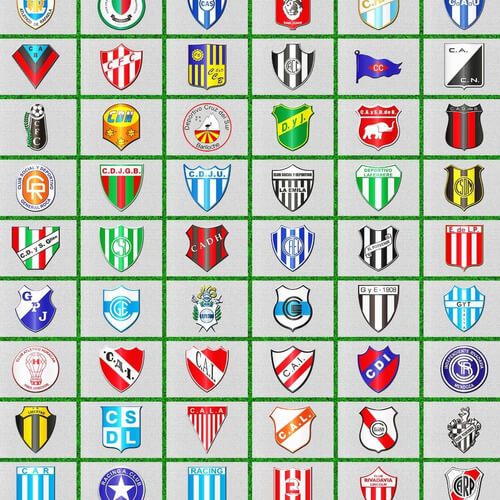

La Primera División de Argentina es el torneo de la primera categoría del fútbol
masculino argentino, organizado desde 1893 por la Asociación del Fútbol Argentino, excepto entre
las temporadas 2017-18 y 2019-20, cuando fue regido por la Superliga Argentina. Disuelta esta, la Asociación
creó el órgano interno denominado Liga Profesional de Fútbol Argentino, a través del cual retomó su conducción.
Es el máximo escalón del sistema de competiciones del fútbol masculino en el país.
En el campeonato 2023, el tercero a cargo de la Liga Profesional, participan veintiocho equipos,
los que son presentados por clubes, asociaciones civiles sin fines de lucro (aunque desde el 2000 puede darse la situación de
que el equipo esté administrado por una empresa privada, en representación y con la aprobación del club respectivo).
El torneo se disputa con el formato de una sola rueda de veintisiete fechas, en la que se enfrentan todos contra todos.
Consagra un campeón y suma para los descensos que se producirían al final de la temporada.

El campeonato de Primera División es uno de los mejores del mundo de acuerdo con la Federación Internacional
de Historia y Estadística de Fútbol. En la última clasificación publicada, de 2021, ocupa el noveno puesto en el ranking anual,
que se elabora desde 1991. La Primera División de Argentina,
a excepción de 1993, siempre estuvo entre las diez primeras. Su mejor ubicación en este ranking se dio en 2008, cuando logró el
tercer lugar, siendo superada por la Premier League de Inglaterra y por la Serie A de Italia.
Desde 1893, se ha disputado en forma ininterrumpida, y es la única que ha permanecido durante 130 años sin intervalos.nota 4
Esto, sumado a que hubo tres temporadas de seis meses y a que en varios ciclos se han otorgado dos títulos por período e incluso tres
en 1936 y en 2012-13, con 191 ediciones (54 en el amateurismo y 137 en el profesionalismo), es la liga que más campeones consagró en
la historia del fútbol mundial.
La Primera División de Argentina reconoce dos etapas diferenciadas,
conocidas respectivamente como era amateur o amateurismo y era profesional o
profesionalismo. La primera etapa transcurrió desde 1891 a 1934, entre la fundación de
la primera liga, llamada Argentine Association Football League, hasta la fusión de la Asociación Argentina de Football
(Amateurs y Profesionales), nombre que había tomado la entidad oficial afiliada a FIFA, con la disidente Liga Argentina de Football,
que ya había organizado previamente cuatro campeonatos, que dieron origen a la actividad profesional regularizada, a partir de 1931 en adelante.